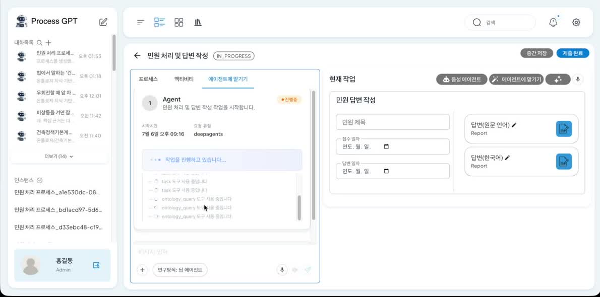

조직의 지식은 문서에도, 데이터베이스에도 흩어져 있습니다
“품질 이슈가 잦던 제품이 어느 고객사에 납품됐고, 그 고객사가 청구한 클레임은 얼마인가?” — 가장 답하기 어려운 질문은 대개 한 곳에 답이 없는 질문입니다.
규정은 PDF에, 제조 실행 기록은 PostgreSQL에, 고객·납품·클레임은 MySQL에 있고 서로를 모릅니다.
Ontology Studio는 이것을 옮기지 않고 온톨로지로 풉니다. 문서든 운영 데이터베이스든 있는 자리에 둔 채 연결하고,
구축 의도와 Golden Question에 따라 도메인 엔티티 단위의 클래스와 조인 키를 갖춘 관계를 스스로 설계합니다.
옮기는 것은 데이터가 아니라 이름과 관계뿐이며, 질의하는 순간 값은 원본에서 가져옵니다.
완성된 그래프는 MCP 서버로 노출되어 Claude, Process GPT 등 어떤 AI 에이전트와도 연동됩니다.
데모 ① 문서를 올려 온톨로지 스키마를 자동 설계하고 Graph RAG로 답하기까지
데모 ② 서로 다른 엔진의 두 데이터베이스를 복제 없이 하나의 온톨로지로
주요 기능
연결 → 의미 확보 → 엔티티 설계 → 적재·바인딩 → 관계 → 질의까지, 소스의 종류와 무관하게 같은 흐름으로 이어집니다


온톨로지의 가치는 ‘다음 질문’에 있습니다
질의별로 테이블을 만들거나 문서를 청크로 쪼개 색인하면, 새 질문이 올 때마다 새 설계가 필요하고 질문 수만큼 유지보수 대상이 늘어납니다. 엔티티로 모델링하면 새 질문은 이미 있는 관계를 따라갑니다. 온톨로지의 가치는 한 질문을 답한 데 있는 것이 아니라, 다음 질문을 답할 수 있다는 데 있습니다.
동작 방식
물리 계층(문서 구조·테이블·컬럼·조인)의 해석은 구축 시점에 모두 끝냅니다. 질의 시점에는 온톨로지만 봅니다.
1. 소스 연결
2. 의미 확보
3. 엔티티 설계
4. 적재 · 바인딩
5. 검증 & 질의
Graph RAG vs 벡터 검색
| 특성 | Ontology Studio (Graph RAG) | 일반 벡터 검색 RAG |
|---|---|---|
| 검색 방식 | 그래프 탐색으로 연결된 조항·레코드까지 추적 | 유사도 상위 청크만 개별 검색 |
| 문맥 연결성 | 조항·엔티티 간 관계를 빠짐없이 확보 | 청크 간 관계 파악 어려움 |
| 근거 제시 | 참조 노드·출처를 명시적으로 제공 | 출처 추적이 제한적 |
| 정확도 | 구조화된 지식 기반의 높은 정확도 | 누락·환각 가능성 상대적으로 높음 |
| 스키마 구축 | 문서·DB로부터 자동 설계 & 자가 개선 | 스키마 개념 없음 |
| 에이전트 연동 | MCP로 표준 연동(Claude 등) | 별도 통합 필요 |
연관 솔루션
지식지도는 혼자 쓰이지 않습니다
Ontology Studio는 조직의 지식을 그래프로 명시화하는 설계 도구입니다. 그 산출물은 Ontologic Platform의 실행 서버에 실려 분석·자동화가 되고, MCP를 통해 Process GPT의 에이전트가 업무 중 참조하는 지식지도가 되며, Robo Architect의 설계·구현 에이전트에게는 도메인 이해의 근거가 됩니다.
① Ontologic Platform
설계는 Studio에서, 실행은 Ontologic 서버에서
Ontology Studio는 Ontologic Platform의 온톨로지 설계 모듈로 맞물립니다. Studio가 만든 스키마(클래스·관계·조인 키)와 데이터소스 매핑이 그대로 Ontologic 실행 서버에 연결되고, 그 위에서 자연어 질의·원인 분석·What-if 시뮬레이션·감시 자동화가 수행됩니다.
설계와 실행이 같은 온톨로지를 공유하므로 스키마를 고치면 실행 결과가 곧바로 따라오고, 무복제 바인딩이 그대로 이어져 별도 ETL 없이(Zero-ETL) 운영 데이터 위에서 분석이 돕니다.


② Process GPT
Agentic AI가 참조하는 지식지도
구축된 온톨로지는 MCP 서버로 노출되고, Process GPT의 딥 에이전트는 업무를 수행하는 도중
ontology_query로 이 지식지도를 실시간으로 탐색합니다.
규정 조항과 운영 데이터를 함께 인용하고, 온톨로지에 명시된 지식에 기반해서만 판단하므로 환각 없는 업무 자동화가 완성됩니다.
AI 에이전트가 스스로 판단해 일하는 AI-Native Enterprise에서 가장 부족한 것은 모델의 성능이 아니라 “무엇에 근거해 판단할 것인가”입니다. 온톨로지는 그 근거를 조직의 언어로 명시해 주고, Process GPT는 그 위에서 실제 업무를 실행합니다. 설계된 지식이 곧바로 실행되는 이 조합이 가장 강력한 시나리오입니다.
③ Robo Architect
설계와 구현으로 이어지는 지식지도
Ontology Studio가 구축한 도메인 지식 그래프는 Robo Architect의 설계·구현 에이전트가 참조하는 지식지도가 됩니다. 문서와 운영 데이터에서 추출한 개념과 관계가 Aggregate·도메인 이벤트 설계의 근거가 되어, AI가 도메인을 정확히 이해한 채 코드를 생성합니다.
두 제품은 서로 자유롭게 오갑니다 — Ontology Studio의 지식을 Robo Architect의 명세로 잇고, Robo Architect가 설계한 모델을 다시 그래프로 축적합니다. 지식과 명세가 한 궤도에서 순환합니다.

지금 바로 시작하세요!
Ontology Studio는 오픈소스로 제공됩니다. 문서 몇 개나 DB 접속 정보만 있으면 나만의 지식 그래프를 손쉽게 구축할 수 있습니다.
Docker 또는 로컬 실행을 지원합니다.